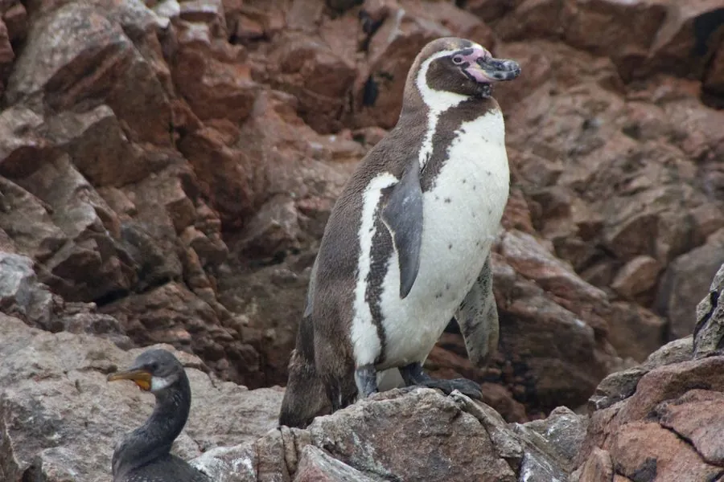

鸟类 · 动物界
洪堡企鹅 Spheniscus humboldti

南美西海岸的企鹅，头部有黑色带状斑纹，胸前有一道黑带，生活在洪堡寒流影响的海岸，因渔业和气候而濒危。
- 分类
- 门脊索动物门纲鸟纲目企鹅目科企鹅科属环企鹅属
- 栖息环境
- 南美洲西海岸的岩岸、海岛与洞穴，受洪堡寒流影响的海域
- 地理分布
- 秘鲁和智利沿海，中国无分布
- 保护级别
- IUCN 易危（VU）；非中国分布物种
物种志
洪堡企鹅体长 65–70 cm，体重 3.6–5.9 kg。它的背部黑色，腹部白色，头部有黑色带状斑纹，胸前有一道黑色横带，脸部裸露的皮肤呈粉红色，喙黑色并带粉红色基部。它的外形与非洲企鹅相似，是环企鹅属的一员。
洪堡企鹅分布于南美洲西海岸的秘鲁和智利，受洪堡寒流影响的海域为其提供了丰富的食物。它们以鱼、乌贼和甲壳类为食，繁殖期在海岸的洞穴和岩缝中营巢，每窝产卵 2 枚，孵化 40–42 天。由于过度捕捞鳀鱼、气候变化和人类干扰，洪堡企鹅的种群数量下降，被列为易危物种；它并非中国分布物种，保护它需要兼顾渔业管理与海岸栖息地保护。
形态与习性
- 食性鱼、乌贼和甲壳类
- 体长65–70 cm
- 体重3.6–5.9 kg
- 繁殖每窝 2 枚卵，孵化 40–42 天
- 特征头部黑色带纹，胸前有一道黑带
- 寿命野外约 15–20 年
趣味知识
- 洪堡企鹅生活在受洪堡寒流影响的南美西海岸，海水富含鱼群。
- 它胸前有一道黑色横带，脸部裸皮呈粉红色。
- 因过度捕捞鳀鱼和气候变化，洪堡企鹅被列为易危物种。